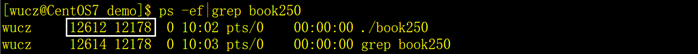
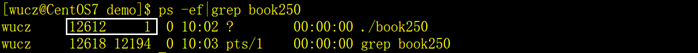
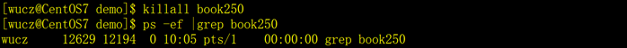
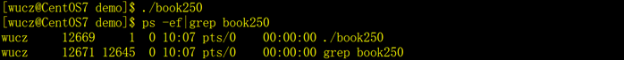
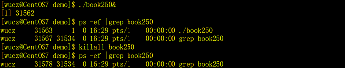
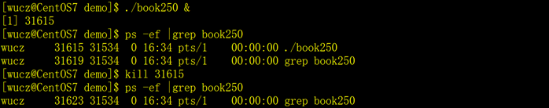
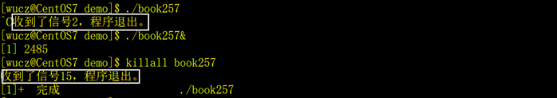

在之前的章节中，如果要运行程序，在命令提示行下输入程序名后回车，程序被执行，然后等待程序运行完成，在程序运行的过程中，也可以用Ctrl+c中止它。
在实际开发中，我们需要让程序在后台运行，没有界面，没有用户输入数据，例如socket服务端程序book250。
如果想让程序在后台运行，有两种方法。
如果想让程序在后台运行，执行程序的时候，命令的最后面加“&”符号。
如：
./book250 &
程序就在后台运行了。

在后台运行的程序，用Ctrl+c无法中断，并且就算终端退出了，程序仍在后台运行。
如果终端退出了，后台运行的程序将由系统托管。

在第一张图中，book250的父进程是12178，第二张图中，book250的父进程是1。
为了不影响接下来的学习，用killall book250指令让book250程序退出。

另一种方法是采用fork，主程序执行fork，生成一个子进程，然后父进程退出，留下子进程继续运行，子进程将由系统托管。
在book250的main函数后增加以下代码：
if (fork()>0) return 0;
重新编译后执行book250，运行效果如下：

上图中，20752是fork后的子进程，它的父进程号是1，是系统进程（亲爹没了，天地日月为父）。
问题来了，程序在后台运行了，离开了终端控制，用Ctrl+c上也无法中止，那怎么让它停下来呢？暂时用一个笨方法，杀了它。
杀程序有两个方法：
1）killall 程序名
killall book250
执行效果

2）先用“ps -ef|grep 程序名”找到程序的进程编号，然后用“kill 进程编号”。
执行效果

signal信号是Linux编程中非常重要的部分，接下来将详细介绍信号的基本概念、实现和使用，和与信号的几个系统调用（库函数）。
signal信号是进程之间相互传递消息的一种方法，信号全称为软中断信号，也有人称作软中断，从它的命名可以看出，它的实质和使用很象中断。
软中断信号（signal，又简称为信号）用来通知进程发生了事件。进程之间可以通过调用kill库函数发送软中断信号。Linux内核也可能给进程发送信号，通知进程发生了某个事件（例如内存越界）。
注意，信号只是用来通知某进程发生了什么事件，无法给进程传递任何数据，进程对信号的处理方法有三种：
1）第一种方法是，忽略某个信号，对该信号不做任何处理，就象未发生过一样。
2）第二种是设置中断的处理函数，收到信号后，由该函数来处理。
3）第三种方法是，对该信号的处理采用系统的默认操作，大部分的信号的默认操作是终止进程。
发出信号的原因很多，这里按发出信号的原因简单分类，以了解各种信号：
信号名 | 信号值 | 默认处 理动作 | 发出信号的原因 |
SIGHUP | 1 | A | 终端挂起或者控制进程终止 |
SIGINT | 2 | A | 键盘中断Ctrl+c |
SIGQUIT | 3 | C | 键盘的退出键被按下 |
SIGILL | 4 | C | 非法指令 |
SIGABRT | 6 | C | 由abort(3)发出的退出指令 |
SIGFPE | 8 | C | 浮点异常 |
SIGKILL | 9 | AEF | 采用kill -9 进程编号 强制杀死程序。 |
SIGSEGV | 11 | C | 无效的内存引用 |
SIGPIPE | 13 | A | 管道破裂:写一个没有读端口的管道 |
SIGALRM | 14 | A | 由alarm(2)发出的信号 |
SIGTERM | 15 | A | 采用“kill 进程编号”或“killall 程序名”通知程序。 |
SIGUSR1 | 30,10,16 | A | 用户自定义信号1 |
SIGUSR2 | 31,12,17 | A | 用户自定义信号2 |
SIGCHLD | 20,17,18 | B | 子进程结束信号 |
SIGCONT | 19,18,25 | 进程继续（曾被停止的进程） | |
SIGSTOP | 17,19,23 | DEF | 终止进程 |
SIGTSTP | 18,20,24 | D | 控制终端（tty）上按下停止键 |
SIGTTIN | 21,21,26 | D | 后台进程企图从控制终端读 |
SIGTTOU | 22,22,27 | D | 后台进程企图从控制终端写 |
处理动作一项中的字母含义如下
A 缺省的动作是终止进程。
B 缺省的动作是忽略此信号，将该信号丢弃，不做处理。
C 缺省的动作是终止进程并进行内核映像转储（core dump），内核映像转储是指将进程数据在内存的映像和进程在内核结构中的部分内容以一定格式转储到文件系统，并且进程退出执行，这样做的好处是为程序员 提供了方便，使得他们可以得到进程当时执行时的数据值，允许他们确定转储的原因，并且可以调试他们的程序。
D 缺省的动作是停止进程，进入停止状况以后还能重新进行下去。
E 信号不能被捕获。
F 信号不能被忽略。
signal库函数可以设置程序对信号的处理方式。
函数声明：
sighandler_t signal(int signum, sighandler_t handler);
参数signum表示信号的编号。
参数handler表示信号的处理方式，有三种情况：
1）SIG_IGN：忽略参数signum所指的信号。
2）一个自定义的处理信号的函数，信号的编号为这个自定义函数的参数。
3）SIG_DFL：恢复参数signum所指信号的处理方法为默认值。
程序员不关心signal的返回值。
服务程序运行在后台，如果想让中止它，强行杀掉不是个好办法，因为程序被杀的时候，程序突然死亡，没有释放资源，会影响系统的稳定，用Ctrl+c中止与杀程序是相同的效果。
如果能向后台程序发送一个信号，后台程序收到这个信号后，调用一个函数，在函数中编写释放资源的代码，程序就可以有计划的退出，安全而体面。
信号还可以用于网络服务程序抓包等，这是较复杂的应用场景，暂时不介绍。
在实际开发中，在main函数开始的位置，程序员会先屏蔽掉全部的信号。
for (int ii=0;ii<100;ii++) signal(ii,SIG_IGN);
这么做的目的是不希望程序被干扰。然后，再设置程序员关心的信号的处理函数。
程序员关心的信号有三个：SIGINT、SIGTERM和SIGKILL。
程序在运行的进程中，如果按Ctrl+c，将向程序发出SIGINT信号，信号编号是2。
采用“kill 进程编号”或“killall 程序名”向程序发出的是SIGTERM信号，编号是15。
采用“kill -9 进程编号”向程序发出的是SIGKILL信号，编号是9，此信号不能被忽略，也无法捕获，程序将突然死亡。
所以，程序员只要设置SIGINT和SIGTERM两个信号的处理函数就可以了，这两个信号可以使用同一个处理函数，函数的代码是释放资源。
示例（book257.cpp）
/*
* 程序名：book257.cpp，此程序用于演示用信号通知后台服务程序退出。
* 作者：C语言技术网(www.freecplus.net) 日期：20190525
*/
#include <stdio.h>
#include <unistd.h>
#include <stdlib.h>
#include <signal.h>
void EXIT(int sig)
{
printf("收到了信号%d，程序退出。\n",sig);
// 在这里添加释放资源的代码
exit(0); // 程序退出。
}
int main()
{
for (int ii=0;ii<100;ii++) signal(ii,SIG_IGN); // 屏蔽全部的信号
signal(SIGINT,EXIT); signal(SIGTERM,EXIT); // 设置SIGINT和SIGTERM的处理函数
while (1) // 一个死循环
{
sleep(10);
}
}运行效果

不管是用Ctrl+c还是kill，程序都能体面的退出。
Linux操作系统提供了kill命令向程序发送信号，C语言也提供了kill库函数，用于在程序中向其它进程或者线程发送信号。
函数声明：
int kill(pid_t pid, int sig);
kill函数将参数sig指定的信号给参数pid 指定的进程。
参数pid 有几种情况：
1）pid>0 将信号传给进程号为pid 的进程。
2）pid=0 将信号传给和目前进程相同进程组的所有进程，常用于父进程给子进程发送信号，注意，发送信号者进程也会收到自己发出的信号。
3）pid=-1 将信号广播传送给系统内所有的进程，例如系统关机时，会向所有的登录窗口广播关机信息。
sig：准备发送的信号代码，假如其值为零则没有任何信号送出，但是系统会执行错误检查，通常会利用sig值为零来检验某个进程是否仍在运行。
返回值说明： 成功执行时，返回0；失败返回-1，errno被设为以下的某个值。
EINVAL：指定的信号码无效（参数 sig 不合法）。
EPERM：权限不够无法传送信号给指定进程。
ESRCH：参数 pid 所指定的进程或进程组不存在。
本章节的重点是介绍信号的应用场景，属于概念性的知识，代码其实很简单，只要各位理解了信号原理和应用就可以了。
但是，文章中提到的知识点，大家一定要用程序去测试它。
C语言技术网原创文章，转载请说明文章的来源、作者和原文的链接。
来源：C语言技术网（www.freecplus.net）
作者：码农有道
如果文章有错别字，或者内容有错误，或其他的建议和意见，请您联系我们指正，非常感谢！！！
C语言技术网（www.freecplus.net），粤ICP备19156379号